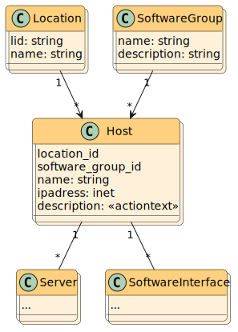

Hosts  Model SoftwareGroup bin/rails g scaffold SoftwareGroup \ name:string:index \ description:string \ --no-stylesheets --no-javascripts --no-helper Model Host bin/rails g scaffold Host \ location:belongs_to \ software_group:belongs_to \ name:string \ ipaddress:inet \ description:rich_text \ --no-stylesheets --no-javascripts --no-helper